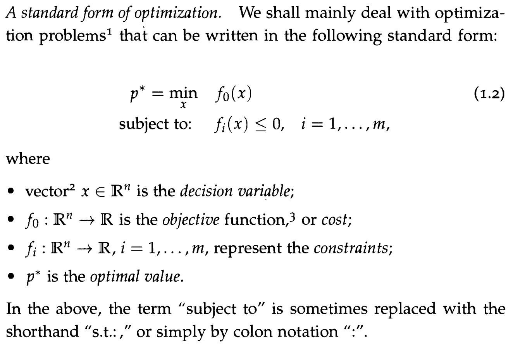
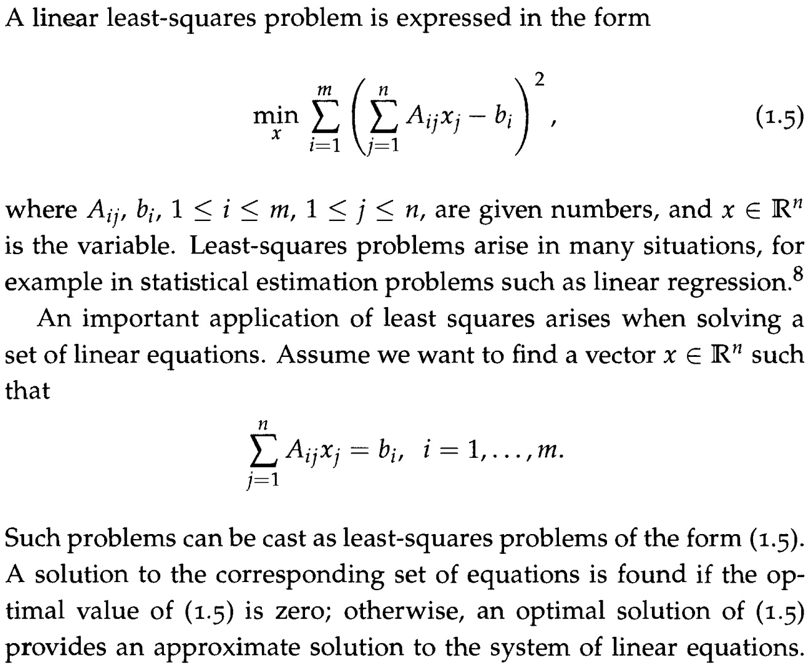
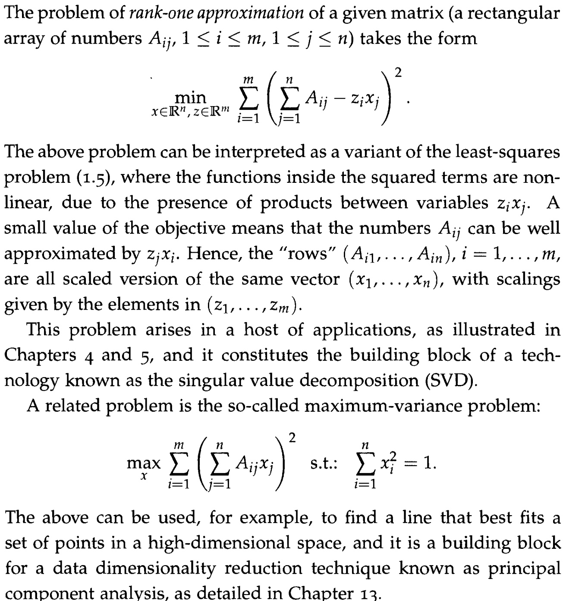
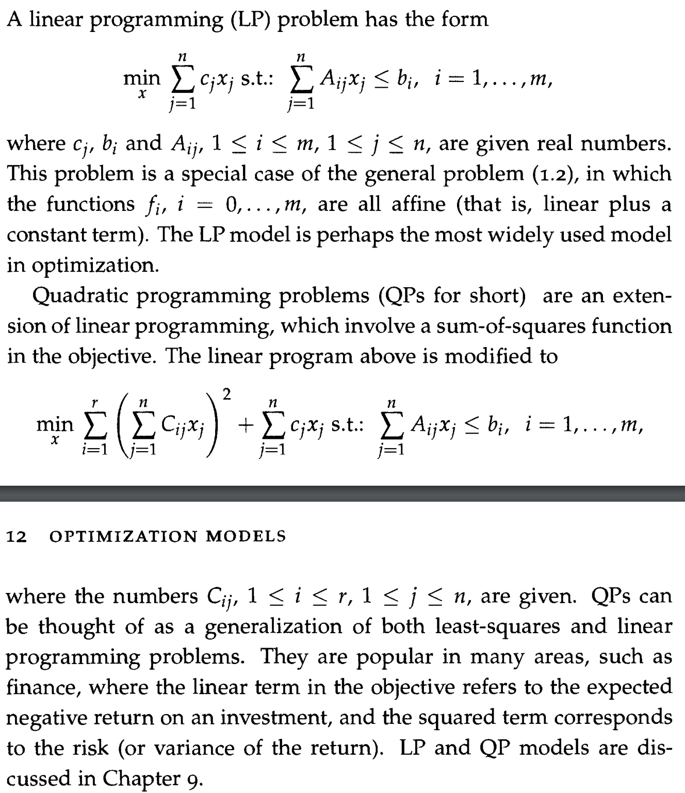

Content:
This course focuses on tractable optimization problems, that is, problems that can be reliably and efficiently solved on a computer. Specifically we study convex optimization, with emphasis on problems involving convex quadratic constraints and objectives.
Optimization Problems:

Keep in Mind:
Local vs Global optimal points: most algorithms tend to be trapped in local minima.
Tractable vs Non-Tractable problems: not all problems have a reliable efficient algorithm. Tractable problems are all those optimization models for which a globally optimal solution can be found numerically in a reliable way, with computational effort that grows gracefully with the size of the problem. Models that can be formulated in the form of linear algebra problems or in convex form are typically tractable models. Tractability is often not a property of the problem itself but a property of our formulation and modeling of the problem.
Problem Transformations: The optimization formalism is extremely flexible and allows for many transformations which may help to cast a given problem in a tractable formulation.
Important Classes of Optimization Problems:
Least Squares and Linear Equations:

Low-rank Approximations and Maximum Variance:

Linear and Quadratic Programming:

Convex Optimization: convex optimization problems are of the form(1.2) where the objective and constraint functions have the special property of convexity. Not all convex problems are easy to solve but many of them are indeed computationally tractable.
Combinatorial Optimization: in combinatorial optimization variables are Boolean or more generally integers reflecting discrete choices to be made. Combinatorial problems and more generally Mixed Integer Programs belong to a class of problems known to be computationally hard, in general.
Non-Convex Optimization corresponds to problems where one or more of the objective or constraint functions in the standard form(1.2) does not have the property of convexity. Non-convex problems are very hard to solve, in general.